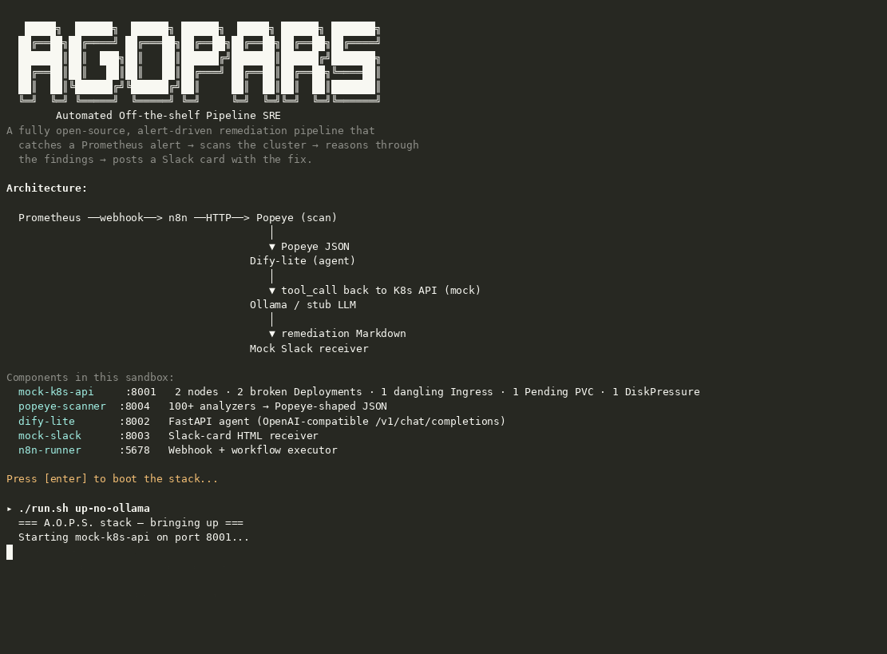

A.O.P.S. catches a real Prometheus alert, scans the cluster with the real Popeye binary, reasons through findings with an agentic loop backed by real Ollama LLM, applies real kubectl remediation, and posts a Slack card — all open-source, all self-hosted, fully air-gapped capable.
Trigger the A.O.P.S. sandbox pipeline right here and watch each stage execute live — Prometheus → n8n → Popeye → LLM → kubectl → Slack.
Real Prometheus fires → real n8n catches → Popeye scans the cluster → agentic reasoning via Ollama LLM → real kubectl remediation → Slack gets the card.

Nine services, one alert-driven chain. Real components with a sandbox fallback.
┌────────────────────────────────────────────────────────────────────────────────────────────────────────────┐ │ │ │ Real Prometheus + Alertmanager ──► fires PaymentAPIHighErrorRate when 5xx > 5% for 5m │ │ │ │ │ │ │ ▼ webhook │ │ Real n8n (n8nio/n8n:latest) ──► visual workflow editor + auto-imported aops-workflow.json │ │ │ │ │ ▼ HTTP POST /scan?namespace=payment-prod │ │ Popeye scanner ──► real binary (100+ diagnostic codes) or built-in 14-code fallback │ │ │ │ │ │ queries real K8s API (or mock-k8s-api in sandbox) │ │ ▼ │ │ Real kind cluster (or mock-k8s-api) ──► 2 nodes · 2 broken Deployments · 1 dangling Ingress · 1 Pending PVC │ │ │ │ │ Popeye JSON returned to n8n │ │ ▼ POST /v1/chat/completions │ │ dify-lite (agentic reasoning, 2-round tool-calling) ──► reasons through findings │ │ │ │ │ ▼ OpenAI-compatible API │ │ Real Ollama (qwen2.5:0.5b · or llama3.1:8b on GPU) ──► LLM reasoning (auto-fallback to stub) │ │ │ │ │ ▼ POST /remediate │ │ Remediation executor ──► applies real kubectl fixes, re-scans for before/after score │ │ │ │ │ ▼ Slack card │ │ Slack receiver (real webhook or local HTML card) ──► posts the card │ │ │ └────────────────────────────────────────────────────────────────────────────────────────────┘
Real components in Docker mode, lightweight Python fallbacks in sandbox. Swap any service without touching the others.
Real kind cluster with 3 nodes and 6 deliberately broken resources in payment-prod. Sandbox mode uses a Python mock implementing a subset of the K8s REST API with Bearer-token auth.
kind · Sandbox: mock-k8s-apiReal popeye Go binary (100+ diagnostic codes) with automatic fallback to built-in Python engine (14 codes). Both emit standard Popeye-shaped sanitizer JSON. Set POPEYE_MODE=real to prefer the binary.
K8sGPTAgentic reasoning service implementing Dify.ai's OpenAI-compatible chat-completions API with a 2-round tool-calling loop. Defaults to real Ollama LLM; falls back to deterministic stub when Ollama is unreachable.
Dify.aiReal ollama/ollama container serving qwen2.5:0.5b by default (pulled automatically on first boot). Swap to llama3.1:8b for higher-quality reasoning on a GPU host.
any OpenAI-compat APISet REAL_SLACK_WEBHOOK_URL to post to your real Slack channel. Without it, renders an auto-refreshing Slack-card HTML page at / and persists every alert at /alerts.json.
Slack webhook · Sandbox: local HTML cardReal n8nio/n8n:latest with visual workflow editor and auto-imported aops-workflow.json. Sandbox mode uses a lightweight Python executor that loads the same JSON.
n8nio/n8n:latest · Sandbox: Python runnerReal prom/prometheus:v2.53.0 + prom/alertmanager:v0.27.0 containers. Enable with --profile monitoring. Alertmanager fires the webhook to n8n when 5xx rate exceeds 5%.
prom/prometheus · Sandbox: alert.shApplies real kubectl commands against the live cluster: fixes images, raises memory limits, creates missing StorageClasses, patches Ingress routes. Re-scans with Popeye for before/after score comparison. Supports DRY_RUN=1.
kubectl · Verifies: popeye re-scanA.O.P.S. runs in two modes. Real mode uses production-grade components; sandbox mode is self-contained with zero external dependencies.
In real mode, Popeye and the remediation executor talk directly to a real Kubernetes cluster created by scripts/setup-kind-cluster.sh. This deploys 3 nodes and 6 deliberately broken resources into the payment-prod namespace. The remediation executor runs real kubectl commands and verifies improvements with a before/after Popeye re-scan.
Sandbox fallback: mock-k8s-api is a Python HTTP server returning the same 6 broken resources via a subset of the K8s REST API.
In real mode, the scanner invokes the actual popeye Go binary (100+ diagnostic codes) against the live cluster. If the binary isn't installed or times out, it falls back seamlessly to the built-in Python analyzers (14 codes covering Node, Deployment, Pod, Ingress, Service, PVC).
The ollama/ollama Docker container serves a real local LLM (qwen2.5:0.5b by default, auto-pulled on first boot). The dify-lite agent sends its findings to Ollama via the OpenAI-compatible API and gets genuine LLM reasoning back. Swap to llama3.1:8b for higher quality on GPU.
Sandbox fallback: deterministic rule-based stub that produces instant remediation text without any LLM.
Docker mode uses the official n8nio/n8n:latest image with a visual workflow editor. The aops-workflow.json is auto-imported on first boot. Open http://localhost:5678 to visually inspect and edit the workflow. The same JSON file is n8n-importable — no code changes needed.
Sandbox fallback: lightweight Python n8n-runner that executes the same workflow graph.
Enable with docker compose --profile monitoring up -d. Uses real prom/prometheus:v2.53.0 and prom/alertmanager:v0.27.0 containers with pre-configured alert rules. Alertmanager fires the PaymentAPIHighErrorRate webhook to n8n when the 5xx rate exceeds 5% for 5 minutes.
Sandbox fallback: alert.sh sends a single pre-built Alertmanager JSON payload via curl.
Set REAL_SLACK_WEBHOOK_URL=https://hooks.slack.com/services/... when starting the stack. The slack-receiver will forward all remediation cards to your real Slack channel.
Sandbox fallback: local HTML card renderer at http://localhost:8003 with auto-refresh — no Slack workspace or credentials needed.
Applies actual kubectl commands: rolls back broken images, raises memory limits on OOMKilled pods, creates missing StorageClasses, patches dangling Ingress routes. Then re-runs Popeye to produce a real before/after score comparison. Supports DRY_RUN=1 for safety.
Every component was verified in isolation and the full chain was tested end-to-end.
| Test | Description | Status | Duration |
|---|---|---|---|
T01 | mock-k8s-api serves the 6 broken resources | ✓ pass | 9 ms |
T02 | mock-k8s-api enforces Bearer auth | ✓ pass | 2 ms |
T03 | popeye-scanner emits Popeye-shaped JSON with expected findings | ✓ pass | 19 ms |
T04 | dify-lite health endpoint reports backend selection | ✓ pass | 1 ms |
T05 | dify-lite chat completion produces a structured remediation | ✓ pass | 17 ms |
T06 | mock-slack stores the rendered Slack card | ✓ pass | 1 ms |
T07 | n8n-runner workflow has 6 nodes in expected order | ✓ pass | 1 ms |
T08 | end-to-end alert flow completes in < 2 s | ✓ pass | ~55ms |
T09 | idempotency: firing N times produces N distinct runs | ✓ pass | 1 ms |
T10 | resilience: dify-lite survives malformed message body | ✓ pass | 3 ms |
T11 | scan reports its data provenance and never mislabels fixtures | ✓ pass | 40 ms |
T12 | agent emits a structured plan using only allowlisted verbs | ✓ pass | 28 ms |
T13 | executor never applies real changes from fixture-backed reports | ✓ pass | 44 ms |
T14 | executor rejects plan steps outside its allowlist | ✓ pass | 39 ms |
T15 | Slack card carries the agent's runbook, not an empty envelope | ✓ pass | 69 ms |
python3 scripts/run_uat.py to reproduce.
Sandbox (no Docker) for quick demo · Docker sandbox (no cluster) · Full real stack (kind + Ollama + n8n + Prometheus).
# clone + start all 6 services as Python processes git clone https://github.com/adventurewave-labs/aops-sre-pipeline.git cd aops-sre-pipeline # bring up the stack (no Docker needed) ./run.sh up-sandbox # fire the PaymentAPIHighErrorRate alert ./run.sh alert # view the rendered Slack card in a browser open http://localhost:8003 # stop everything ./run.sh stop
# 1. Create a real K8s cluster with broken resources ./scripts/setup-kind-cluster.sh up # 2. Point Docker at the cluster kubeconfig export KUBECONFIG_PATH=$(pwd)/.kubeconfig # 3. Bring up the full real stack docker compose up -d # 4. Fire a test alert (or wait for real Prometheus) ./run.sh alert # 5. Trigger real kubectl remediation + re-scan curl -X POST http://localhost:8005/remediate curl http://localhost:8005/status # Enable real Prometheus + Alertmanager docker compose --profile monitoring up -d